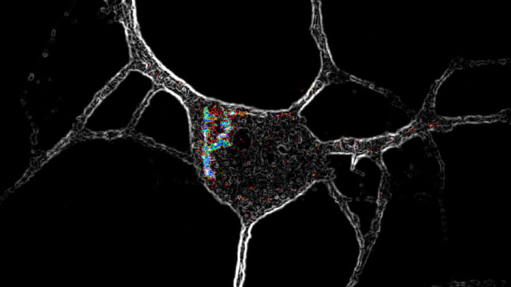
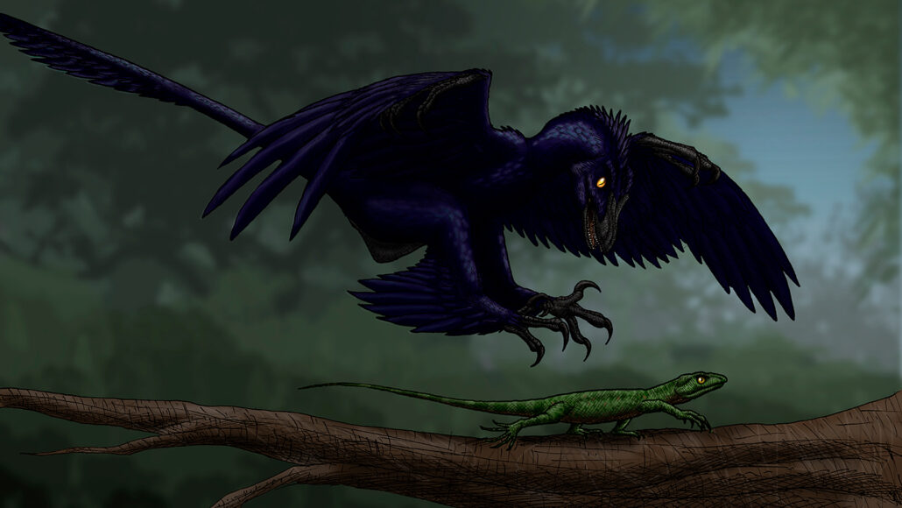

NEWS
home
sports
science
Fossils suggest early primates lived in Arctic
The Arctic today is a hostile place for most primates. But a series of fossils found since the 1970s suggest that wasn’t always the case. Dozens of fossilized teeth and jaw bones unearthed in northern Canada belonged to two species of early primates — or at least close relatives of primates — that lived in the Arctic around 52 million years ago, researchers report January 25 in PLOS ONE. These remains are the first primate-like fossils ever discovered in the Arctic and tell of a groundhog-sized animal that may have skittered across trees in a swamp that once existed above the Arctic Circle.
Other science news
Psychedelics may improve mental health by getting inside nerve cells

Psychedelics may improve mental health by getting inside nerve cells

This dinosaur might have used its feet to snag prey in midair like modern hawks

Psychedelics may improve mental health by getting inside nerve cells